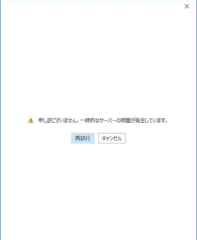

こんにちは、Office サポートの西川 (直) です。
Office のサインインを行うときに、インターネットに接続できる環境にもかかわらず、以下のような、ネットワーク接続がない旨のメッセージが表示されるとお問い合わせいただくことがございます。
「現在接続できません。ネットワークを確認して、後でもう一度お試しください」
「申し訳ございません。一時的なサーバーの問題が発生しています。」

このようなメッセージは、通常、Office のサインイン時に、サインインに使用するエンドポイントへの通信が正常に完了しなかった場合に表示されます。
具体的には、以下の可能性が考えられますので、ご参考にしていただけますと幸いでございます。
1. 通信が必要な URL の構成
-—————————
Office 365 サービスをご利用いただく際に、通信可能な構成にしていただく必要がある URL として、以下の公開情報がございます。
Office 365 の URL と IP アドレスの範囲
https://docs.microsoft.com/ja-jp/office365/enterprise/urls-and-ip-address-ranges
もし、特定の端末ではなく、すべての端末で事象が発生している場合、本項目をご確認いただき、通信の疎通に問題がないかご確認ください。
特定の端末で事象が発生している場合、IE のプロキシの設定等、貴社のネットワーク環境の設定が正しく適用されているかをご確認いただくとともに、”2. インターネット アクセス状況の確認” の内容をご確認ください。
2. インターネット アクセス状況の確認
-———————————–
Office は OS の NCSI と呼ばれるネットワークインジケータにより、インターネット接続性を判断しております。
そのため、ブラウザではインターネットに接続できる環境でも、OS のネットワークインジケータで接続がないと判断されている場合、Office のサインインやライセンス認証が失敗します。
以下の資料をご確認いただき、事象に該当するかどうかご確認ください。
インターネット接続性チェックが失敗する環境で Outlook 2013/2016 による先進認証が失敗する
https://social.msdn.microsoft.com/Forums/ja-JP/5cef1013-aec1-492d-a129-15f47e863f0c/12452125311247912540124931248312488255093215424615124811245512?forum=exchangeteamjp
該当している場合、以下の点をご確認ください。
・資料内の “NCSI によるインターネット接続性の確認” に記載のエンドポイントや名前解決がご利用されている環境で行えるかご確認ください。
参考例)
(1) ブラウザで http://www.msftconnecttest.com/connecttest.txt にアクセスします。
Microsoft Connect Test と表示されることをご確認ください
(2) コマンドプロンプトで nslookup dns.msftncsi.com を入力し、以下の結果を受け取れるかをご確認ください。
Name: dns.msftncsi.com
Address: 131.107.255.255
・資料内の “有効な対処方法” の内容をお試しください。
・無線 LAN や VPN をご利用されている場合には、VPN 無しの有線 LAN に切り替えてお試しください。
3. 既知の事象について
-———————————–
2020 年 2 月 25 日以降の累積更新プログラムを適用することで、この NCSI のインターネット接続性の確認が “インターネット なし” と判定されることがある事象が報告されております。
詳細は以下の Blog 記事をご確認いただけますと幸いです。
タイトル : 2020 年 2 月 25 日以降の累積更新プログラムを適用すると、NCSI によるインターネット接続性の確認が “インターネット なし” と判定されることがある。
URL : https://social.technet.microsoft.com/Forums/ja-JP/e0f3fc1a-ae69-47ab-8695-6f82dea48a8a/2020-24180-2-26376-25?forum=Wcsupportja
本情報の内容 (添付文書、リンク先などを含む) は、作成日時点でのものであり、予告なく変更される場合があります。